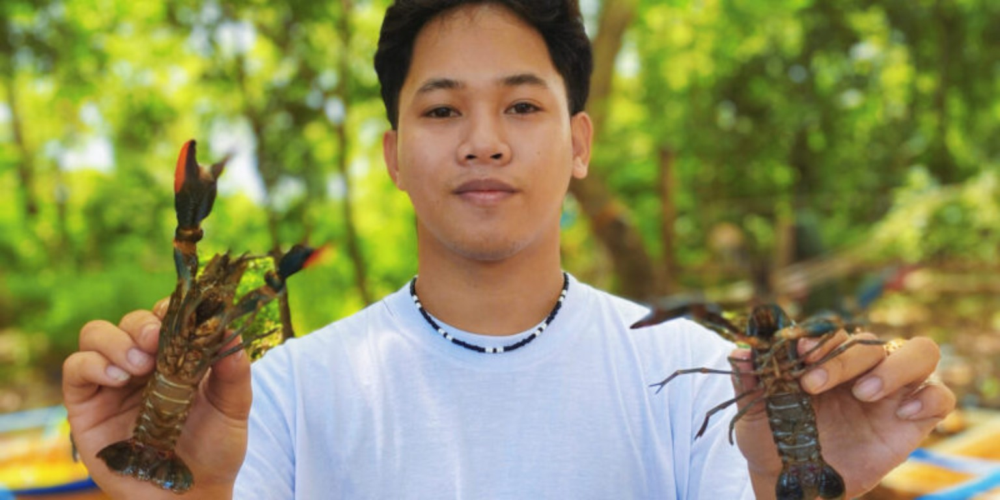
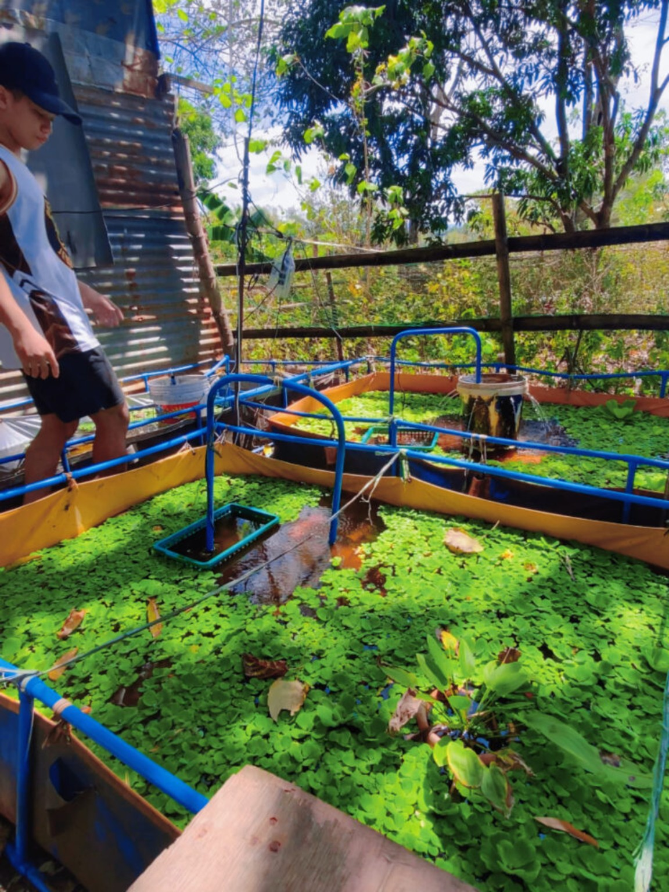
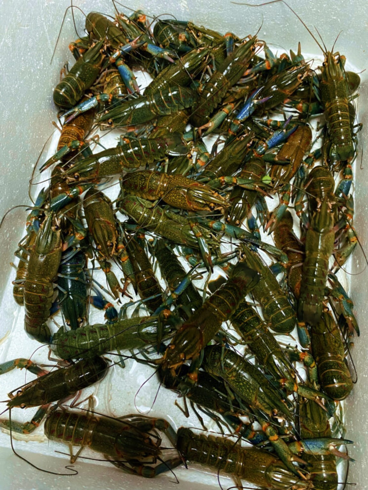
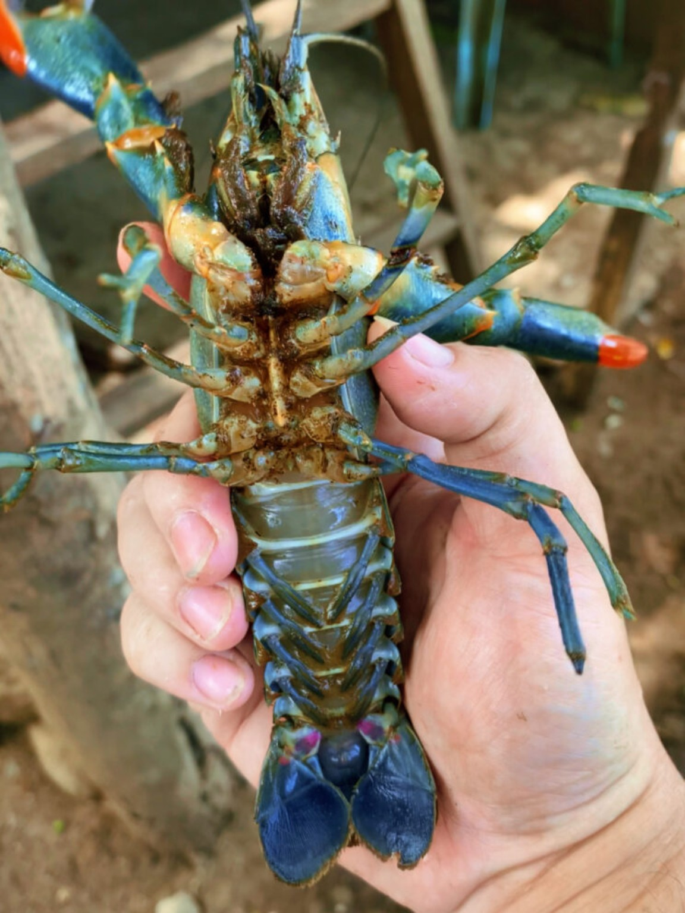

Who We Are
Learn more about CrayFish Binangonan Rizal and what the business is about.
CrayFish Binangonan Rizal
CrayFish Binangonan Rizal, also known as Kuya Joms Line, is a crayfish farming business based in Binangonan, Rizal.
The business focuses on raising and breeding Australian Red Claw crayfish and providing customers with crayfish together with guidance on their proper care.
The business was established by Jomar Sta. Ana Estella and grew from a small crayfish setup into a growing crayfish operation.
Our Story
From a small setup to a growing crayfish farming business.
From a Small Setup to a Growing Business
Before getting into crayfish, Jomar was already raising ornamental fish such as guppies and mollies. After learning about crayfish and seeing its potential, he decided to try raising them himself.
The business started with only six breeder crayfish and an initial investment of around ₱5,000–₱6,000, with help from business partner Marvin Tinga.
The first setup was small, using panyera containers. After the crayfish began producing eggs, the operation expanded into trapal ponds.
Over time, the crayfish population grew to more than 1,000, developing into the business known as Kuya Joms Line – CrayFish Binangonan Rizal.
Why Crayfish?
Jomar saw crayfish farming as an opportunity because of its relatively low competition and manageable maintenance. He also found crayfish interesting to raise compared with other aquaculture species.
Our Founder
Meet the person behind CrayFish Binangonan Rizal.

Jomar Sta. Ana Estella
Jomar Sta. Ana Estella is the founder of Kuya Joms Line – CrayFish Binangonan Rizal.
He has a background in raising ornamental fish and later applied his experience to crayfish farming, gradually developing his own breeding operation.
His work also includes helping customers learn how to properly care for and raise crayfish.
Jomar Sta. Ana Estella at the crayfish farm.
What We Do
Raising, breeding and preparing Australian Red Claw crayfish for customers.
Crayfish Breeding
The farm raises and breeds Australian Red Claw crayfish through a managed freshwater farming system.
Farm Management
Daily work includes feeding the crayfish, maintaining ponds and filtration systems, separating animals during breeding and monitoring their growth.
Helping Customers
The business also provides care information and practical guidance to customers so that new crayfish owners can have a better start when raising their animals.
Our Farm
A closer look at the farming setup behind the crayfish business.

The farm uses pond systems for raising and breeding crayfish.
Growing the Farm
The operation began on a 100-square-meter lot purchased by Jomar's father. It initially used small containers before expanding to trapal ponds for breeding and growing crayfish.
The operation grew from its original six breeder crayfish to a population of more than 1,000.
Breeding Process
Mature crayfish are placed in prepared breeding containers.
Egg-bearing crayfish are monitored while the eggs develop.
Young crayfish hatch after the eggs complete their development.
Young crayfish continue growing until they are ready for breeding or sale.
Our Products
Crayfish and related items offered by the business.

Australian Red Claw crayfish raised by the farm.
Australian Red Claw Crayfish
The farm primarily offers Australian Red Claw crayfish, a freshwater crayfish species used in aquaculture.
Trio Crayfish
A trio set consists of two females and one male, making it suitable for customers interested in starting a breeding group.
Crayfish by Weight
Crayfish may also be offered by weight. Current pricing can be checked through the business's ordering or social media channels.

A close-up view of the crayfish offered by the business.
Our Online Presence
Follow the business and keep up with its crayfish-related content.
Connecting Through Social Media
CrayFish Binangonan Rizal shares information, updates and crayfish-related content through social media.
Visit the business on Facebook and TikTok to see its latest content, updates and available products.
Contact Information
Find and contact CrayFish Binangonan Rizal.
Kuya Joms Line
For current availability, orders and other inquiries, customers can contact the business through the information provided above or through its social media pages.